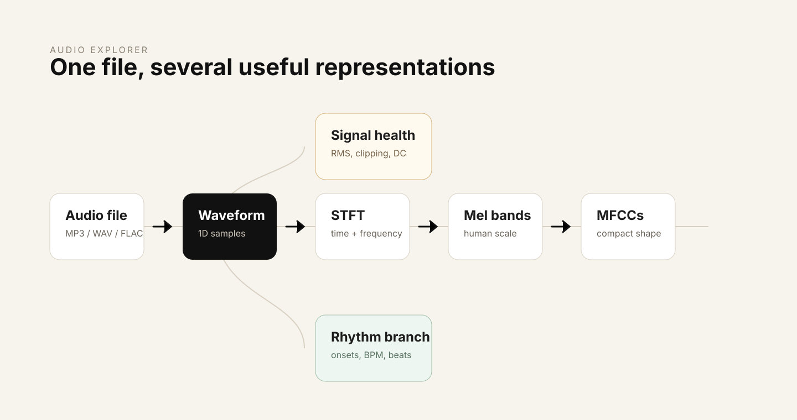

Open to AI/ML internships 2026
Shivashant Manohar
AI / ML Engineering · Systems · Models · Evaluation
I build machine learning systems end to end, then try hard to prove they don’t work.
Final-year CS (AI & ML) at VIT-AP. Most of what I know came from implementing things rather than reading about them — a transformer written from scratch before I read a reference implementation, an audio pipeline built one transform at a time, a trading screener shipped alongside the study that tried to falsify it.
- 01load trackDa-TACOS
- 02chroma / HPCP12 bins
- 03transpose (OTI)12 shifts
- 04subsequence DTWcosine cost
- 05rank candidates1,000 cliques
- 06scoreMAP · MRR · R@K
The classical half of the pipeline, implemented and unit tested. The learned encoder replaces steps 02–04 and gets measured on the same split.
Selected work
Three things I built, and what each one taught me.
-
01Building
Audio · Retrieval
Cover Song Retrieval
Given one recording, find every other recording of the same composition — across changes of key, tempo, arrangement, language, and voice. It is a ranking problem, not a classification one: the set of works is open, and two versions of the same piece may share no surface audio properties at all.
I built the classical baseline first, deliberately. Chroma features, key invariance through the Optimal Transposition Index, cosine cross-similarity, and subsequence DTW as the alignment score. MAP, MRR and Recall@K are written from scratch and unit tested against rankings I worked out by hand, so a neural result later has something real to beat.
1,000 cover cliques 13,000 cover tracks 2,000 distractors 12 transposition shifts- Chroma / HPCPtimbre discarded
- Key alignmentOTI over 12 shifts
- Subsequence DTWtempo-elastic path
- Ranked listMAP / MRR / R@K
The evaluation protocol decides more of the result than the model does. Splitting by track instead of by work puts the same composition on both sides of the wall, and every number after that is meaningless.
- Python
- NumPy
- librosa
- Essentia
- PyTorch
- FAISS
-
02Shipped
Audio · DSP
Audio Explorer
An interactive toolkit that makes the standard audio-AI front end inspectable: waveform and signal health, STFT spectrograms, 128-band Mel spectrograms, MFCCs with delta features, and beat tracking. Feature computation is kept separate from visualisation so each stage can be read on its own.

One file, unfolded into the representations a model actually consumes. A representation is defined by what it throws away. Building each transform by hand made it obvious how much of the signal is gone by the time a model sees an MFCC — and why that is usually the point.
- Python
- librosa
- NumPy
- SciPy
- Plotly
- Streamlit
-
03Negative result
Quantitative · Backtesting
VCP Screener
A screener that scans roughly 2,300 NSE equities for a volatility contraction pattern, combining technical, fundamental and ownership evidence behind a FastAPI service and a dependency-free frontend.
The screener is the smaller half. The larger half is the ten-year study that tried to falsify it: point-in-time signal replay, one shared trade simulator, real transaction costs, a portfolio-level constraint, and matched random entries as a control. The study found no demonstrable edge, and the site says so.
2,300 equities scanned 2,657 replayed signals 227 tests 10 years of barsA control you forgot to match measures something else. Drawn from the wrong window, my random entries were reporting the market regime rather than the pattern — which is exactly how a result that looks good gets published.
- Python
- pandas
- FastAPI
- JavaScript
Earlier builds
- Modern Mini LLM — decoder-only transformer from scratch, 2024 A complete PyTorch training pipeline: byte-level BPE tokenizer, offline token caching, memmap TinyStories loading, and custom RMSNorm, RoPE, Grouped-Query Attention and SwiGLU. Each component was built and tested from first principles before I looked at a reference implementation, then wired to CLI inference and a Gradio interface.
- Federated Intrusion Detection — privacy-preserving ML, 2024 A federated anomaly-detection pipeline for decentralised healthcare networks that trains without centralising client data, using lightweight secure aggregation, with a study of the tradeoff between aggregation efficiency and accuracy under non-IID client distributions.
How I build
Rules I earned the slow way.
- 01Build the classical baseline first, or you will never know what the network actually bought you.
- 02The evaluation protocol is part of the result. A split that leaks makes every number after it meaningless.
- 03Write the metric yourself and unit test it against a ranking worked out by hand.
- 04A representation is defined by what it discards, so be explicit about what you threw away.
- 05Try to falsify your own result before someone else has to.
What broke
Things I got wrong, and what changed after.
- Key invariance is an assumption A single global transposition index fails on covers that modulate partway through. Handling it properly means scoring more than one hypothesis per pair.
- Clique leakage Splitting by track instead of by work put the same composition on both sides of the boundary. Splits are now made at the work level, before anything else runs.
- Alignment cost is length-biased Unnormalised DTW quietly rewards short candidates over musically better matches. Score normalisation is still an open problem in the pipeline.
- Noise mistaken for progress A retrieval delta means nothing until it clears a work-level bootstrap interval, so significance testing became part of the loop rather than an afterthought.
- A control I forgot to match In the VCP study, controls drawn from the wrong window measured the market regime rather than the pattern. Matching on symbol, risk and window fixed it — and killed the result.
Where I am
Honest about the gradient.
-
Strongest today
Python, NumPy and pandas; audio signal processing with librosa; building a pipeline end to end and testing the parts that matter.
-
Building depth in
PyTorch sequence models, metric learning with triplet objectives, retrieval evaluation, and FAISS indexing.
-
Learning next
Training at larger scale, serving models properly, and the cloud tooling around them — currently through GCP work with GDG.
- Languages
- Python · C++ · SQL
- ML
- PyTorch · scikit-learn · Transformers · Hugging Face
- Data & audio
- NumPy · pandas · librosa · Essentia · FAISS
- Engineering
- Git · Linux · FastAPI · Streamlit · Gradio · GCP
Writing
Notes written close to the work.
-
Building the audio-AI pipeline from first principles
A visual tour from decoded waveform to STFT, Mel spectrograms, MFCCs and beat tracking — what each transform keeps, and what it quietly throws away.
-
Why chroma is the right representation for cover detection
What the Optimal Transposition Index actually assumes, why subsequence DTW absorbs tempo drift, and how easy it is to overstate a retrieval result.
About
Where I am, and where this is going.
I am in my final year of a CS degree in AI & ML at VIT-AP, working toward AI/ML engineering roles. The through-line in what I build is wanting to know how a system actually behaves rather than whether a number went up — which is why most of my projects come with the evaluation attached, and occasionally with the result that the idea did not work.
Music is the reason I care about audio at all. Cover song identification is a small, well-posed version of a question I find genuinely interesting: what survives when a song is re-recorded, and can a system learn to hold onto it?
- Education
-
B.Tech, Computer Science — AI & ML, 2023–2027
VIT-AP University, Amaravati · CGPA 8.05 / 10 - Community
- Google Developer Groups VIT-AP — Cloud & DevOps team, since August 2024. Workshops and community sessions.
If you’re hiring for AI/ML, I’d like to talk.
I’m looking for internships and early engineering roles where I can build systems end to end and be held to a real bar. The fastest way to reach me is email.